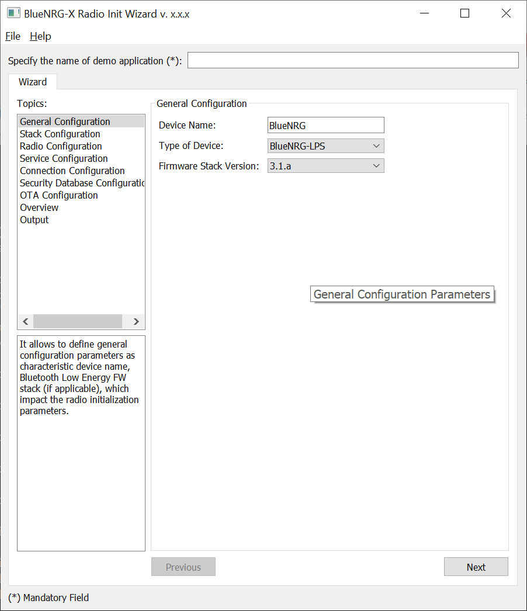
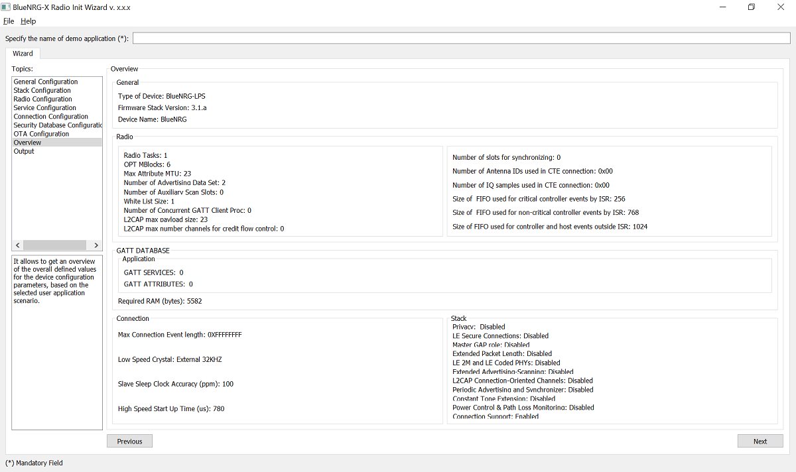

The Bluetooth LE Radio Initialization Parameters Wizard is a PC application which allows to define the proper values required for the correct BlueNRG-LP/BlueNRG-LPS BLE radio initialization, based on the specific user application scenario. As consequence of the user choices, a configuration header file (*_config.h) is generated: this file must be used on the user demonstration application folder. This document is valid for BlueNRG-LP/BlueNRG-LPS v3.x
How to Run
- User can run this PC application by clicking on the Bluetooth LE Radio Initialization Parameters Wizard icon under: Start menu folder, ST BlueNRG-LP_LPS DK X.X.X, BlueNRG-LP Radio Init Wizard.
|

|
| Figure 1: Bluetooth LE Radio Initialization Parameters Wizard |
Main user interface window
- In the left section of the Bluetooth LE Radio Initialization Parameters Wizard – Utility main window, user can select the following topics allowing to define the specific radio initialization parameters based on the specific Bluetooth LE application requirements:
-
General Configuration
-
Stack configuration
-
Radio Configuration
-
Service Configuration
-
Connection Configuration
-
Security DataBase configuration
-
OTA configuration
-
Overview
-
Output
General configuration
- It allows to define general configuration parameters:
-
Characteristic Device name
-
Device type (BlueNRG-LP/BlueNRG-LPS)
-
Select Bluetooth LE FW stack version (3.0, 3.1, 3.1a)
Stack configuration
- It allows to define some stack configuration options:
-
Select which privacy level is used on user application (disabled, privacy host, privacy controller).
-
LE secure connections (enabled/disabled)
-
Master GAP role (enabled/disabled)
-
Extended Packet length (enabled/disabled)
-
LE 2M and LE Coded PHY (enabled/disabled)
-
Extended Advertising/scanning (enabled/disabled)
-
L2CAP Connection-Oriented Channels (enabled/disabled)
-
New Bluetooth Low Energy v3.1 or later modular configurations options:
-
Periodic advertising and PAST (enabled/disabled)
-
Constant Tone Extension (enabled/disabled; not supported on BlueNRG-LP).
-
LE Power Control & Path Loss Monitoring (enabled/disabled)
-
Connection features support
Radio configuration
- It allows to define the radio configuration parameters:
-
Maximum number of simultaneous radio tasks that the device can support:
-
A radio task is an internal link layer state machine which handles a specific radio activity (connection, advertising, scanning).
-
Optional additional number of memory blocks to be added to the Bluetooth LE stack packet manager
-
Max Attribute MTU
-
Number of Advertising Data sets
-
Number of Auxiliary Scan Slots
-
White list size
-
Number of concurrent GATT Client procedures
-
L2CAP max payload size
-
L2CAP max number channels for credit flow control
-
New parameters supported on Bluetooth LE stack v3.1 or later:
-
Number of slots for synchronizing
-
Number of Antenna IDs use in CTE connection (where applicable)
-
Number of IQ samples used in CTE connection (where applicable)
-
Size of the internal FIFO used for critical controller events produced by the ISR (e.g. rx data packets). 256 is the typical defualt value.##
-
Size of the internal FIFO used for non-critical controller events produced by the ISR (e.g. advertising or IQ sampling reports).768 is the typical defualt value.
-
Size of the internal FIFO used for controller and host events produced outside the ISR. 1024 is the typical defualt value.
- NOTEs:
-
Refer to the Bluetooth LE Stack Memory Management documentation available on BlueNRG-LP/BlueNRG-LPS DK SW package for parameters description and usage.
Service configuration
- It allows to define the services and characteristics configuration in terms of:
-
Number of used services;
-
For each service, it allows to define the number of characteristics and the related features (UUID, properties) impacting the GATT database size (1).
- NOTEs:
-
Refer to the Bluetooth LE GATT database size documentation available on BlueNRG-LP/BlueNRG-LPS DK SW package for parameters description and usage.
Connection configuration
- It allows to define the connection configuration parameters:
-
Max connection event length
-
Low Speed Crystal
-
Sleep Clock Accuracy in ppm
-
High Speed Startup Time in us
- NOTEs:
-
Refer to the Bluetooth Low Energy specification for parameters description.
Security Database configuration
- It allows to define the security database storage area sizes:
-
Flash server database size
-
Flash security database size
OTA configuration
- It allows to select if the demo application contains or not OTA service UUID.
Overwiev
- It allows to get an overview of the overall defined values for the device configuration parameters based on the selected user application scenario.
- Ob GATT/GAP Database section, user can also get a estimation about the amount of memory, in bytes, needed for overall storage of GATT database elements and other data structures whose size depends on several parameters (i.e: maximum number of simultaneous radio tasks that the device can support, ..). This could be useful for allowing user to better tune the overall application configuration options in order to fit within the overall available RAM memory resources.
|

|
| Figure 2: Bluetooth LE Radio Initialization Parameters Wizard Overview |
Output window
- It allows to get an overview of the application configuration header file which contains all the required Bluetooth LE radio initialization parameters values.
- This file can be saved with the selected "<user_name>" application. A file "<user_name>_config.h" is generated. User can then copy it on its application project folder and include it on his main application.
 1.8.10
1.8.10